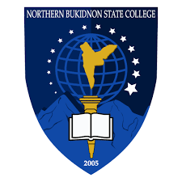

Education is not just about grades, it’s about surviving deadlines, finding good Wi-Fi, and pretending to understand programming. Here’s where I’m currently sharpening my brain cells:

Northern Bukidnon State College
Currently surviving as a 2nd Year BS in Information Technology student
Graduation Year: Depende kung kaya pa ng caffeine
"SKWELA LANG GD"